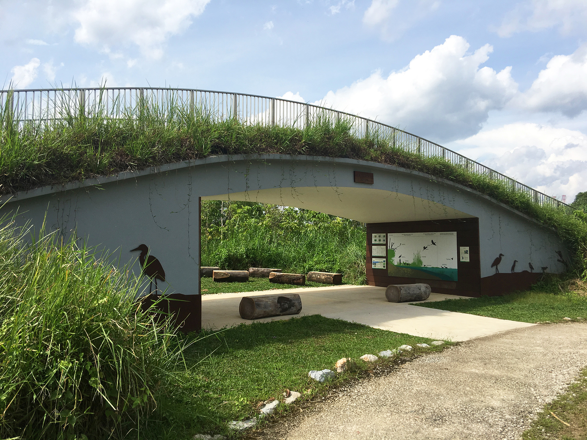

FLORA
You probably trample on many of these wildflowers without a second thought but look closer and find a world of beauty. Kranji Marsh is a great place to enjoy the wildflowers. Look for them on the grass verges of the road and paths where these low growing plants can get the sun. They climb the trees and shrubs and grow in the ponds. The ones pictured here are Past & Completed Projects by Nature Society (Singapore) common. They are native to our region or were introduced a long time ago and have become widespread and naturalized. Many have found traditional uses as indigenous medicines or foods.
FAUNA
With the Marshes being home to 170 species of birds, four species of butterflies and 33 species of dragonflies, it’s easy to catch them all in action, especially in the early morning. Unlike neighbouring Sungei Buloh Wetland Reserve, Kranji Marshes mainly comprises open and grassy marshland, which attracts different kinds of wildlife. Six bird hides and two blinds at the Marsh Station give you a chance to observe birds native to the habitat, such as the Common Moorhen and the Marshes’ signature bird, the Purple Swamphen. The hideouts – they have names like ‘Duck Hide’ and ‘Woodpecker Shelter’ – let visitors spy on wildlife up-close and personal.

CONSTRUCTIONS
Behold, the 10.65-metre tall Raptor Tower. This photogenic landmark located right smack in the middle of the Marsh station grants you a 360 degree panoramic view of the beautiful surroundings. In fact, the view game from the top of this tower is so strong, you probably won’t even need an Instagram filter for it. You will also probably find it oddly therapeutic looking out from the Raptor Tower. There’s just something utterly assuring about staring serenely towards the ripples in the water and the cascades of brilliant green that stand in stark contrast against the pale blue sky.
Activity 1
Enjoy panoramic views of the Marshes
You’ve been to the top of Marina Bay Sands, ION Sky and Pinnacle@Duxton, but now it’s time to see the city from a very different vantage point: the Raptor Tower at Kranji Marshes. Designed to emulate a bird protecting its nest on a tree, the 10.65-metre-tall wooden structure offers a panoramic view of the surrounding marshes. Educational boards are placed around the open-air observatory deck of tower, helping the eagle-eyed identify birds and pick out landmarks such as the Moorhen Pond and the BBC Shortwave relay station in the distance. From November to March, you can also catch raptor birds – otherwise known as birds of prey – that include migratory visiting species such as the Black Baza and Japanese Sparrowhawk.
Activity 2
Have a one-of-a-kind learning experience
The Kingfisher Burrow is another intriguing structure – it’s an arch that can be used as both an open-air classroom space and a vantage point. The structure is 100 per cent sustainable and includes recycled tree trunks for benches and the shelter. It’s the perfect setting to learn about the importance of nature and conservation. The National Parks Board is even considering the possibility of collaborating with schools to arrange lessons here.

Activity 3
Indulge your inner child with sticks and stones
With the birds chirping in the background and its rural vibe, Kranji Marshes is the perfect place to hark back to simpler times and indulge your inner child. That’s what the many man-made twig structures lying around the marshes are for. Think of all the fun possibilities: you can sit in a ‘nest’, or pose for an artistic shot with friends and family. You can also hop, skip and jump to your heart’s content across the Moorhen pond in the public area – it’s one to bring the whole brood to.
Activity 4
Take an epic Instagram shot of the floating boardwalk
If panoramic views and tranquil marshes aren’t enough, the floating boardwalk at the Reed Crossing just might be. Shutterbugs have noticed its resemblance to other photogenic jetties around the world, and snapping a shot down the boardwalk makes it look as though it extends to infinity. The platform is also a key pathway between the public area and the core conservation area – like the Turut Woods and the Parrot Hide – which can only be accessed through special guided walks.
Activity 5
Go into stealth mode to bird-watch
Some of the birds found in the Kranji Marshes are: Lesser Whistling Duck, Grey-headed Fish Eagle, Yellow Bittern, Purple Heron, Little Tern, Red-wattled Lapwing, Common Moorhen, Purple Swamphen etc. Spot them if you can!
Activity 6
Go on a guided tour to see more of the Marshes
If you're keen to see more of the marshlands, there is a whole separate area which is not open to the general public. Don't fret, you can get access to it by applying for a guided walk. The walk will cover the core conservation area and aims to educate visitors about the biodiversity in the marsh, woodland and grass habitats.
Visit NParks site for more information on guided tours.
Ready to go there?
Fresh air is all you need to feel better about life